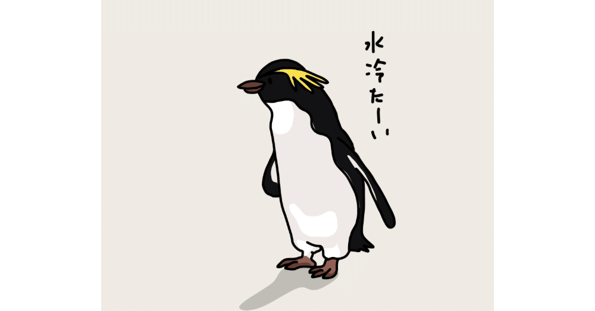

う、うそやろ！？
テレビコマーシャルを観て、こんなにわかりやすく驚く視聴者も今時珍しい。
2月初旬。それは、明日には関東に大雪が降ると可愛げなお天気アナウンサーが涼しい顔でサラッと恐ろしいことを告知した直後だった。
今日は日曜の午後だからこうしてコタツでぬくぬくできているものの、明日の今頃には慣れない雪に悪戦苦闘して、下手したらトリプルアクセルを決めてしまいそうな勢いですってんころりしながら出社しているのかもしれないと思うと、途端にブルーな気持ちになる。
CMに突入するとすぐ他局のザッピングを始めてしまう癖を持つ僕にとって、そのままの画面にしていたのは、そこに川口春奈が出ていたからだ。
少し年下ではあるものの、もはや日本を代表する女優の一人にまで成長したといっても過言ではない彼女の美貌にうっとりしていると、彼女は囁いた。
川口春奈「ねえ。知ってる？ 人は人生で平均4回しか引っ越さないんだって！」
僕「へえーそうなんだ。ルックスだけじゃなくて頭もいいんだね。ますますファンになっちゃうなー」
住宅情報サイトのCMをこんな恍惚な表情で観る日がくるなんて……と恥ずかしい気持ちを抱えながらも、僕は思わず彼女の言葉を反芻する。
川口春奈「人は人生で平均4回しか引っ越さないんだって！」
川口春「人生で平均4回しか引っ越さないんだって！」
川口「平均4回しか引っ越さないんだって！」
川「平均4回しか引っ越さない」
か「4回……」
ぼ「う、うそやろ！？」←今ココ
はい。回想終わりです。毎度のことではありますが、冒頭から茶番にお付き合いいただきありがとうございます。
振り返れば令和最初の日、2019年5月1日から一人暮らしを始め、その後に諸般の事情で2022年まで毎年1回引っ越しを繰り返してきた僕にとって、先述のCMで告げられた平均的な引っ越し回数に驚愕するほかなかった。
でも、考えてみればそうか。転勤や結婚などしない限り、引っ越しなんてそうそうするもんでもないよな。真剣に考えなくても、4年連続で引っ越しをする方が珍しいに決まっている。
振り返れば、初の一人暮らしは実家の最寄駅の一つ隣街にあるマンションだった。
今振り返ると、せっかくなら全く知らない街に行けばよかったなと思ったものの、初めてだからこそ、そんな近場でも入居できたのかなとも思う。実家にはすぐに帰れるし、新しいスーパーや病院を開拓しなくても、見慣れた街並みがすぐそこに広がっているわけだから非常に気楽なものだった。
2回目の引っ越しは人生初となる東京を離れ、岐阜に住んだ時だった。
憧れだった名古屋の書店に転職し、ワクワクする気持ちを必死に抑えながら見慣れた荷物をサカイ引越センターのトラックに預けて、自身は新幹線に乗った。もちろん最初の引っ越しとは比較にならないほど費用はかかったし、結局1年も経たないうちに東京に戻ったわけだから無駄遣いの何ものでもなかったはずなのに、あの頃は「真っ白になった未来に何を描こうか？」といった、新しい人生への高揚感しかなかったような気がする。
部屋の広さは実に最初住んだマンションの倍ほどになったのに、家賃は4万もしないという破格の価格だった。
岐阜はほかの地方都市と同じく車社会ではあるものの、教習所を卒業してから一度もハンドルを握っていなかった僕にとって、唯一の相棒は学生時代に自転車量販店で購入したクロスバイクだった。岐阜では一番近いコンビニでさえ徒歩10分もかかったため、電車に乗る時以外は必ずといっていいほど彼(勝手に男と決めつけているが)にお世話になった。
3回目の引っ越しは東京の都下となる、現在も居住している市への引っ越しだ。
母校の大学最寄駅の一駅隣の街で、少し歩けば学生時代の思い出が蘇る風景にも再会できる立地。元々はもう少し都心に居住するつもりだったが、相談をしに行った不動産屋さんのお兄さんに「(再転職先となる職場最寄駅の)○△なら、□□駅(今回の引っ越し先)周辺もいいと思いますよ！」とオススメされ、結局この街を選んだわけだ。
結果、大正解だった。
四季折々を感じられる自然は豊かだし、かつて著名な文豪たちも数多く住んだ文学香るこの街が、今なお大好きなのだから。
「あれ？ じゃあ引っ越し回数は3回なんじゃないの？」そう疑問に思った方もいるだろう。
僕もそのつもりだった。そもそも同じ自治体の中で引っ越しをするなんて、設定された家賃が想定よりも家計を圧迫していたり、管理人に言っても懲りずに迷惑行為を繰り返す近隣住民に困っていたなど、そうした予期せぬトラブルがない限り、まずないだろう。
僕の場合、確かにトラブルに巻き込まれ、結果的に4回目の引っ越しをし今のマンションに入居したのは事実。しかし、その理由は前述したものにはない。端的に言ってしまえば事故に遭ったのだ。
それは忘れもしない、8月15日午前7時頃だった。
その日は仕事が休みで早起きする必要もなく、見るも耐えないアホズラでグースカいびきを立てながら眠っていたわけだが、突然上の方から何かが破裂もしくは炸裂するような物騒な物音が聞こえた。そして、その数秒後に僕の上に何かが下降してきた。
そう、それは大量の水。
前日の8月14日は終日大雨が降っており、その夜自室の天井には見たこともないイボのような膨らみがあった。「なんだこれ？」とは思いながらも、「いつか引くだろう」と予想していたその膨らみが破れてしまい、天井の内側で制御されていた水が一気に頭に降ってきたのだ！
わあああああ！！！！！！！！！！
冗談なしにそう叫んで一瞬で目を覚ました。巧みなピッキング能力を持つ何者かが自室に侵入し、金銭を奪い取る前に家主である僕の息の根を止めようと物騒な武器で寝込みを襲ってきたのではないか？と本気で思った。
しかし、それは人の姿ではなく自然の驚異だった。これは後々判明したことだが、どうやら僕が住んでいた部屋の1階上がバルコニーだったらしく(当時はそんな造りになっていたとは露とも知らなかった)、そこに昨夜の大雨で水が溜まり、それが自室の天井裏にある水道管に限界まで流れこんでしまい、結果天井を決壊させる原因になったらしい。
10分ほど放心状態に陥るものの、その間も絶え間なく水滴は落ちてきていて、気づけば室内には水位5cm以上の水が溜まっていた。テレビやパソコン、当時買いたてのタブレットまでも一時電源がつかなくなり、「ああ……」と完全に現実に打ちのめされた。
後日、これは一見すると信じられないような現象ではあるが、そのデジタルデバイスたちは一人残らず自ら息を吹き返してくれたので、今になっては不幸中の幸いだったが。
その後は怒涛の展開。24時間受付の管理会社窓口に連絡すると、ほどなくしてセコムの方が駆けつけてくれ状況を報告、一緒に室内に溜まった水をできるだけベランダの排水溝に流したり持ってきてくれたバケツに汲み入れたりして、ひと段落ついたところで実家に帰った。
今振り返っても、あれは未だに我が身に降りかかった出来事とは思えない(というか、思いたくない)人生の一幕だった。
部屋の修復に相当な時間がかかり、管理会社とのやり取りも雑多な日々の合間を縫って数ヶ月継続する必要があった事情もあり、やむなく今のマンションに引っ越した。今回の水害事故が起きた物件は築40年近く家賃もお安めのアパートだったので、4回目の引っ越しは当時築5年の築浅で家賃は1.5倍ほどの、自身にしては贅沢な物件を選び移り住んだ。
未だに家賃が自身の月給にしてはそこそこ高い方だなと思うが、その分、住んで数年が経った今でも特に不便な点などなく満足度は高い。
数少ない友人たちを招いてみても概ね好感触だし、今や東京を離れない限りここにずっと住んでいたいとさえ考えている。あの天井決壊がなければ、もしかしたらこの部屋にも出会えていなかったと思うと、複雑な気持ちにもなるが。
バラエティー番組で人気芸人がドッキリに嵌められ、頭上から大量の水を被る姿を何度か観たことがあったが、当時あんなに大笑いしていた僕がまさか同じ目に遭うなんて……カメラも回っていないというのに（それは当たり前）。
他人で笑ったことはいつか自分にも返ってくる。これを書きながら、そんな因果応報的な現象にも思いをはせてみたのである。
あれ？ そもそも何の話だったっけ？
まあ、こんな忘れっぽい僕が言えるのは一つだけ。みんな天井には気をつけようね！(ここだけの話、このエッセイの終わり方が思いつかなかったのは内緒だよ)